Groepen plannen
in Roostervoorbereiding
Een belangrijk onderdeel van de roostervoorbereiding is het plannen van de benodigde groepen. Wij laten u op deze pagina zien hoe u eenvoudig per vak op een afdeling een geplande groep toevoegt en verwijdert. Daarnaast zijn er een aantal algemene instellingen die u kunt invullen voor alle vakken, zoals:
- het verwacht aantal docenten
- de lesvraag
Voor keuzevakken kunt u nog aanvullende kenmerken instellen:
- hoe u wilt dat het leerlingaantal wordt berekend
- of er uitgesloten pakketdelen zijn
- of en wat de aangepaste maximale groepsgrootte is.
 Onderwijs > Geplande groepen
Onderwijs > Geplande groepen
Geplande groepen
Het scherm Geplande groepen is een belangrijke tool tijdens de roostervoorbereiding. Hier zult u met enige regelmaat kijken hoeveel vraag naar onderwijs er voor het volgende schooljaar is. Elk vak dat op een afdeling voorkomt, vormt hier één regel. Het aantal leerlingen dat het vak volgt en de splitsingsnorm bepalen hoeveel groepen u volgend jaar nodig zult hebben. In de kolom Grp verw ziet u hoeveel groepen er worden verwacht. Het is aan u om de geplande groepen ook daadwerkelijk aan te maken!
Als het aantal te verwachten groepen overeenkomt met het aantal geplande groepen, is de kolom Status: OK (groen gekleurd).
Als u minder geplande groepen heeft dan verwacht wordt de Status: Te weinig (oranje gekleurd).
Als u meer geplande groepen heeft dan verwacht wordt de Status: Te veel (rood gekleurd).
Rechtsboven heeft u de mogelijkheid een keuze te maken voor de kolommen die getoond worden: standaard of leerlingtelling:
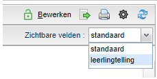
Instellingen klassikale vakken
Bij een klassikaal vak zijn een aantal instellingen alvast voor u ingevuld:
- Het verwacht aantal groepen ('Grp. verw.') is altijd het verwacht aantal stamklassen dat is ingevuld of berekend in het scherm Afdelingen.
- De maximale groepsgrootte ('Lln/grp max.') vult u in bij Beheer > Roosterprojecten > Projectinstellingen, uitzonderingen per afdeling in het scherm Afdelingen.
Informatie over vakken
In het meest linkse paneel ziet u verschillende kolommen met informatie over de vakken:
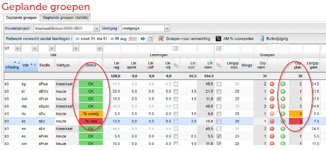
- Afdeling
- Vak
- Sectie
- Vaktype
- Status
De sectie en het vaktype kunt u hier (in bulk) aanpassen. Door te dubbelklikken op de regel in de kolom Sectie of Vaktype, kunt u per regel een keuze maken.
Bulkwijziging vaktype of sectie
Om in één keer een grote groep regels aan te passen kunt u de knop
- Filter eerst op afdeling en/of vak
- Selecteer eerst één regel
- Selecteer meerdere regels met CTRL of SHIFT of CTRL+A
- Klik op de knop
- Plaats een vinkje bij "veld bijwerken"
- Selecteer de juiste sectie of vaktype
- Klik op
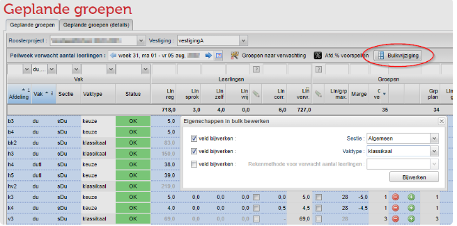
Naast "klassikaal" en "keuze", kunt u hier ook kiezen voor "afdeling". U maakt hiermee SWT lessen aan. SWT staat voor studiewerktijd, maar andere termen kunnen zijn: huiswerktijd, kwt enz. Het zijn keuzelessen waarvoor de leerlingen het vak niet in hun vakkenpakket hebben. U kunt ook geen groepen aanmaken voor dit type. Meer over deze lessen leest u hier: SWT op afdelingsniveau
Informatie over leerlingen
In het paneel "Leerlingen" ziet u verschillende kolommen met informatie over de leerlingen:
Standaard zichtbaar:
- Telling
- Afd%*
- Opleiding
- Aantal leerlingen regulier
- Aantal leerlingen sprokkelen
- Aantal leerlingen zelfstudie
- Aantal leerlingen vrjistelling
- Leerlingcorrectie (LWOO)
- Verwachte aantal leerlingen (regulier+sprokkel)
Een aantal kolommen zijn standaard verborgen maar kunt u met de rechtermuisknop meerdere kolommen in beeld krijgen.
Rekenmethode voor verwachte aantal
Standaard zijn de kolommen voor de rekenmethode verborgen. Via de een klik met de rechtermuisknop op een kolomkop kunt u ze tonen.
Alleen bij keuzevakken kunt u een methode selecteren. Als het vak klassikaal wordt aangeboden, heeft immers elke leerling op de afdeling het vak in zijn/haar pakket.
U heeft een aantal mogelijkheden om de leerlingen te tellen. Het aantal leerlingen dat verwacht wordt, vormt weer de basis voor het aantal verwachte groepen.
Note
Advies voor de telling is pakke t + afd%
Ons advies voor de rekenmethode is pakke t+ afd%. Zolang er nog leerlingen geen pakket gekozen hebben, wordt er geteld met een percentage. Dat percentage kan handmatig ingevoerd worden of voorspelt worden op basis van de pakketkeuzes van vorig jaar.
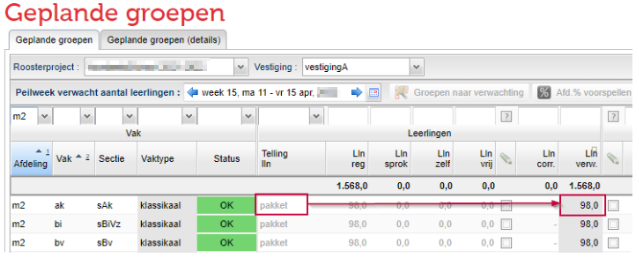
Pakket: Er wordt gekeken naar de leerlingen die een afdelingsdeelname hebben voor de betreffende afdeling. Het % bepaalt voor hoeveel een leerling meetelt (prognostisch). Vervolgens wordt er voor die leerling gekeken of het vak in het pakket van de leerling zit.
Afd%: U kunt ook kiezen voor een percentage van de leerlingen op de afdeling. Als u weet dat bijvoorbeeld de helft van alle leerlingen op een afdeling het vak kiezen, vult u vervolgens in de kolom rechts van de telling het % in: 50. Dit kunt u gebruiken in de periode dat leerlingen nog geen pakketkeuze hebben gedaan. Om toch een idee te krijgen van te verwachten leerlingaantallen kunt u in een vroeg stadium hiermee werken. Naast het handmatig invoeren van een %, kunt u ook het % van het vorige jaar gebruiken:
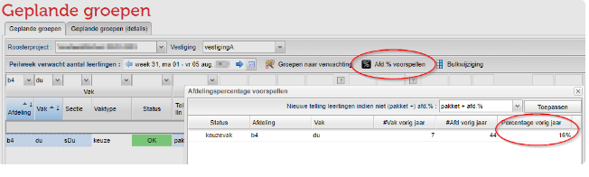
Opleiding: Wellicht werkt u met opleidingen om binnen één afdeling onderscheid te maken tussen verschillende niveaus. Meer info op Werken met opleidingen binnen één afdeling In dat geval wilt u wellicht de leerlingen tellen per opleiding. Als u hier kiest voor Opleiding, dient u in de kolom Opleiding een opleiding te kiezen:
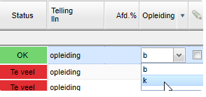
Handmatig: Het is uiteraard ook mogelijk om het leerlingaantal zelf te dicteren. Wanneer u de rekenmethode op Handmatig zet, kunt u in de kolom "lln verw" dubbelklikken en een getal invoeren:
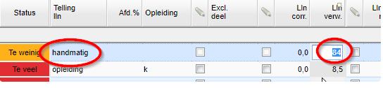
Pakket + afd%: De rekenmethode kijkt naar de actuele aantallen en daar waar nodig aangevuld met een afdelings-%. Dat laatste is relevant als nog niet alle leerlingen het keuzeformulier hebben doorlopen. Het gaat hier om leerlingen die nog geen enkel _keuze_vak in het pakket hebben. Voor die leerlingen wordt het afdelings% toegepast. U dient dus wel de kolom Afd% gevuld te hebben (handmatig of via de knop
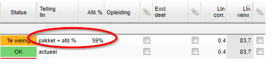
Bulkwijziging voor rekenmethode
U kunt in één keer bijvoorbeeld een hele brugklasafdeling op handmatig zetten:
- Filter de betreffende afdeling
- Selecteer de eerste regel
- Selecteer met shift de laatste regel
- Klik op de knop
- Zet een vinkje bij veld bijwerken rekenmethode
- Selecteer de rekenmethode handmatig
- Klik op de knop
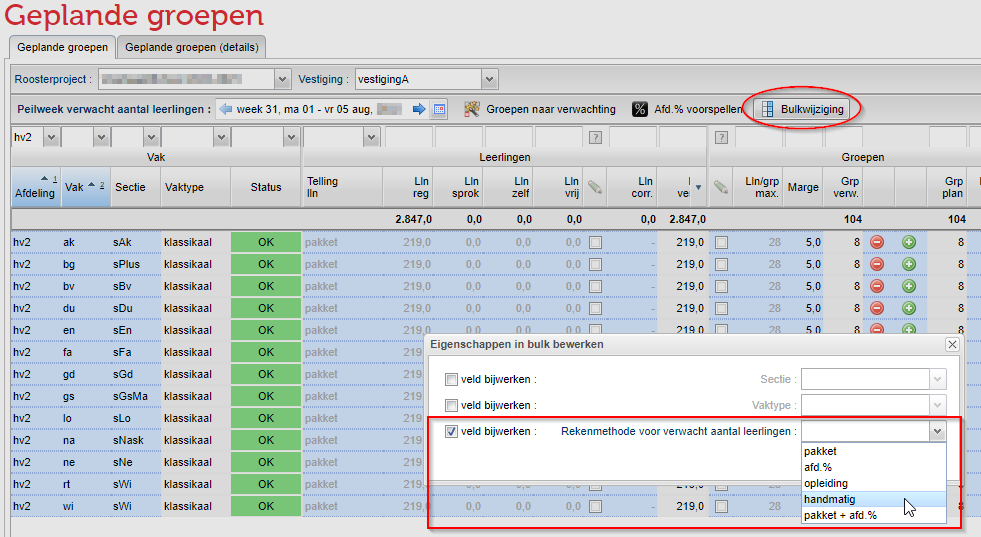
Peilweek verwacht aantal leerlingen
Bij de pakketkeuzes heeft u de mogelijkheid een wijziging door te voeren vanaf een bepaalde week. In het scherm van de geplande groepen heeft u daarom nu ook de mogelijkheid het verwachte aantal leerlingen voor een bepaalde week te laten berekenen.
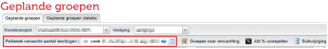
Pakketdeel zelfstudie
Vanaf deze versie is de kolom Excl. deel hernoemd naar Pakketdelen zelfstudie. Een heel pakketdeel kan als zelfstudie worden gemarkeerd bij Onderwijs > Afdelingen.
Hier, in het scherm van geplande groepen, kunt u echter ook op vakniveau bepalen of er leerlingen het zelfstudielabel krijgen. In dat geval worden deze leerlingen niet meegeteld in de formatie (gepland aantal groepen).
Het werkt als volgt:
- Zet een vinkje voor de kolom 'Pakketdelen zelfstudie'
- Dubbelklik in de kolom 'Pakketdelen zelfstudie' en selecteer het pakketdeel (label) dat u uitsluit bij de berekening voor het verwacht aantal leerlingen.
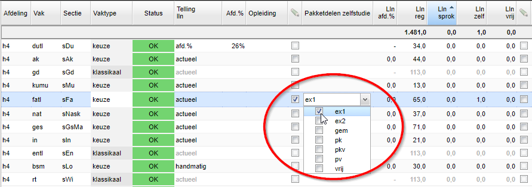
U ziet nu wanneer u op het getal in de kolom 'Lln. verw.' staat een tooltip met daarin de regel 'zelfstudie'. Hier leest u af hoeveel leerlingen nu niet meegeteld worden in de berekening van het verwacht aantal leerlingen.
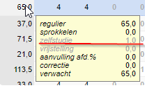
Note
Werkt u met LWOO? Dan ziet u de correctie voor leerlingen met een LWOO-factor terug in de kolom 'Lln. corr'.
Informatie over groepen
Het daadwerkelijk aanmaken van de geplande groepen vindt in dit deel van het scherm plaats.
Minimale en maximale groepsgrootte
Er zijn twee bewerkbare kolommen: de maximale groepsgrootte en de minimale groepsgrootte (Lln/grp max en Lln/grp min). De maximale groepsgrootte wordt gedicteerd door het getal dat bij Onderwijs > Afdelingen is ingevoerd.
Voor vakken van het vaktype keuze heeft u hier de mogelijkheid deze op groep/vak niveau aan te passen. In onderstaand voorbeeld (links) ziet u dat voor afdeling h4 de maximale groepsgrootte op 28 staat. Bij het scherm van geplande groepen hebben we voor h4 en het vak kumu, de maximale groepsgrootte aangepast naar 20.
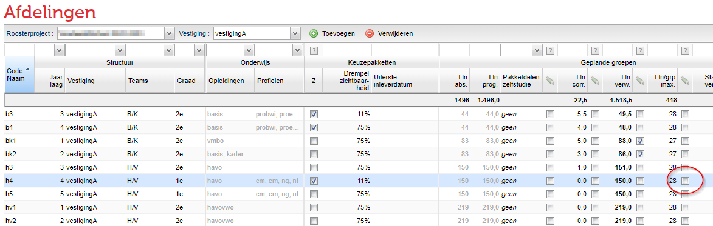
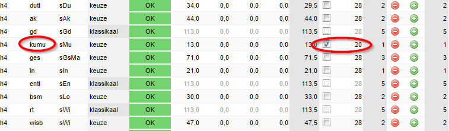
U kunt eventueel ook een minimum instellen. Dat betekent dat er minimaal dat aantal leerlingen het vak gekozen moet hebben, voordat er een extra te verwachten groep komt.
Note
U kunt de maximale groepsgrootte in een bulkwijziging voor meerdere vakken aanpassen. Let wel op, dit kan alleen bij vakken met het vaktype *Keuze.
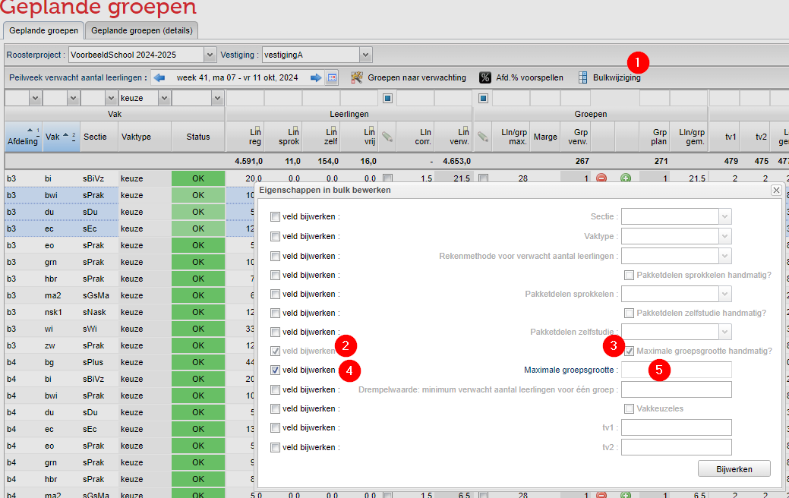
Marge
Deze kolom is gevuld als de marge voor een groep meer of minder vijf leerlingen of minder is. De marge is op basis van het verwachte aantal leerlingen en verwachte aantal groepen. Dus niet het aantal daadwerkelijk geplande groepen!
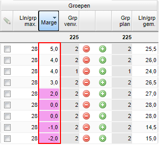
- Een positieve marge (+4) geeft aan dat er nog een marge is van 4 leerlingen voordat er een nieuwe groep aangemaakt moet worden
- Een negatieve marge (-4) geeft aan dat wanneer vier leerlingen het vak laten vallen, er een groep afgehaald kan worden.
- De cel kleurt paars wanneer de marge tussen -2 en +2 ligt
- De marge houdt rekening met de eventuele minimale groepsgrootte die u heeft ingevoerd. Dat betekent dat als de minimale groepsgrootte 5 is en er worden 7 leerlingen geteld, dan is de marge dus 2
Handmatig Geplande groep toevoegen
Groepen plannen doet u daarna als volgt:
- Ga naar Onderwijs > Geplande groepen
- Plan een groep door in een regel op te klikken.
- Voor een geplande groep worden automatisch de geplande lessen volgens de lessentabel aangemaakt.
Handmatig Geplande groep verwijderen
Een geplande groep kan ook weer verwijderd worden:
- Ga naar Onderwijs > Geplande groepen
- Verwijder een geplande groep door in een regel op te klikken.
In bulk aanmaken en verwijderen
U kunt ook in één keer het aantal geplande groepen gelijk maken aan het aantal te verwachten groepen:
- Selecteer eerst 1 regel
- Gebruik CTRL+A om alle regels te selecteren
- Klik op de knop
Informatie over lesvraag
In de kolommen van de lesvraag ziet u:
- de lessentabel per tijdvak (bewerkbaar door te dubbelklikken)
- het gemiddelde aantal lessen
- icoon voor gekoppelde lessen
- icoon voor een groepsgebonden lessentabel
- vakkeuzeles
- de lessentabel voor vakkkeuzelessen
- aantal docenten per les (standaard verborgen)
- lesvraag (aantal geplande groepen x lessentabel x aantal docenten per les)
Vakkeuzelessen
U kunt nu ook zogenaamde vakkeuzelessen aanmaken. Een vakkeuzeles betekent dat het een niet-groepsgebonden les is voor het vak op de afdeling.
- Plaats een vinkje in de kolom "Vakkeuzeles?"
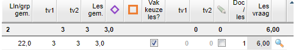
- Vul direct daar achter (per tijdvak) het aantal vakkeuzelessen in. Klik eventueel op het vergrootglas om details te bekijken van de geplande lessen.
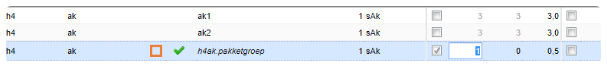
- Geef bij lessenverdeling aan welke docent deze vakkeuzelessen gaat geven
Hoe u verder omgaat met deze vakkeuzelessen kunt u lezen in het hoofdstuk over keuzeroosters.
Verwacht aantal docenten
U kunt per vak op afdeling instellen wat het verwacht aantal docenten per les is:
- Zet een vinkje voor de kolom 'Doc/les'.
- Dubbelklik in de kolom 'Doc/les' en vul handmatig het verwacht aantal docenten per les in:
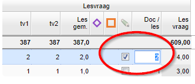
Verband geplande groepen en lesgroepen
Er komt een moment dat u de groepen uit de desktop gaat activeren. Meer info hier over: Groepen toevoegen, verwijderen en activeren.
Vanaf dat moment is er een expliciet verband tussen de geplande groepen in het portal en de lesgroepen in de desktop. Dit verband wordt gelegd in het Groepen en Lessenscherm. De eerste geplande groep die hij tegenkomt koppelt hij aan de eerste groep die hij in de desktop tegenkomt. U kunt dit eventuele verband zien en/of bewerken bij Onderwijs > Geplande groepen > Geplande groepen (details):
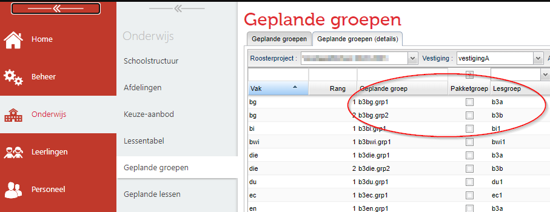